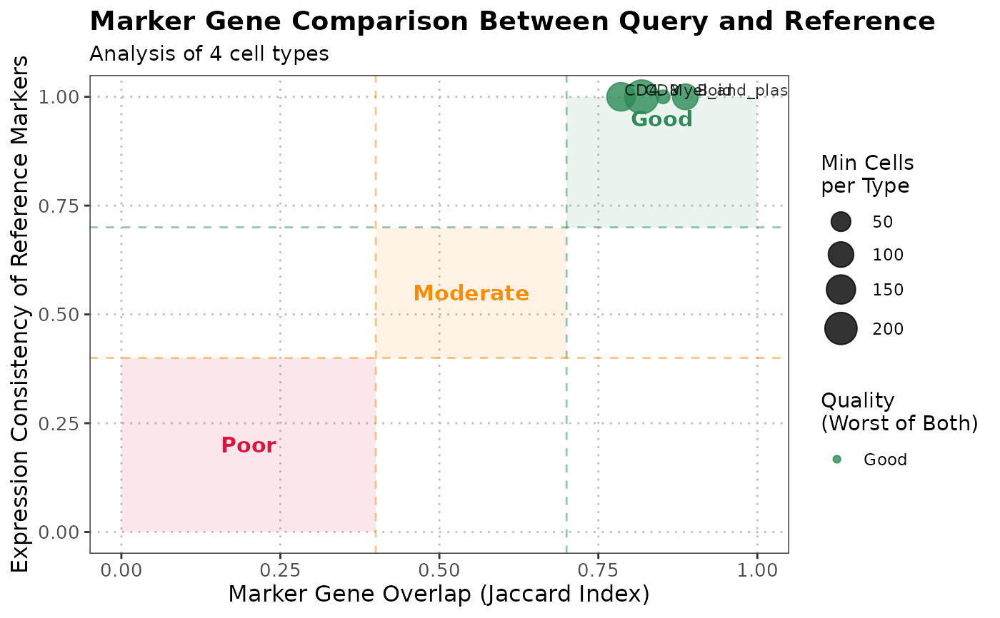

R/compareMarkers.R, R/plot.compareMarkersObject.R
compareMarkers.RdThis function identifies marker genes for each cell type in both query and reference datasets using the standard Bioconductor approach (Wilcoxon rank-sum test), and compares their expression patterns to assess annotation quality. It can optionally filter query cells based on anomaly detection results and restrict analysis to specific cell types.
The S3 plot method generates a comprehensive visualization of the output from the `compareMarkers` function. The plot shows marker gene overlap and expression consistency between query and reference cell types, with quality assessment and detailed annotations.
compareMarkers(
query_data,
reference_data,
query_cell_type_col,
ref_cell_type_col,
assay_name = "logcounts",
n_markers = 50,
min_cells = 10,
anomaly_filter = c("none", "anomalous_only", "non_anomalous_only"),
cell_types = NULL,
...
)
# S3 method for class 'compareMarkersObject'
plot(x, cell_types = NULL, ...)A SingleCellExperiment object containing query cells.
A SingleCellExperiment object containing reference cells.
The column name in the colData of query_data that identifies the cell types.
The column name in the colData of reference_data that identifies the cell types.
Name of the assay to use for computations. Default is "logcounts".
Number of top marker genes to consider for each cell type. Default is 50.
Minimum number of cells required per cell type for marker identification. Default is 10.
Character string specifying how to filter query cells based on anomaly detection. Options: "none" (default), "anomalous_only", "non_anomalous_only".
Character vector specifying which cell types to plot. If NULL, all cell types are plotted.
Additional arguments passed to the plotting function.
A list containing the output from the compareMarkers function.
A list containing the following elements:
Matrix showing overlap of top markers between query and reference for each cell type.
Matrix showing expression consistency of reference markers in query data.
Named vector of quality assessments for each cell type.
List of marker gene results for each cell type in query data.
List of marker gene results for each cell type in reference data.
Vector of cell types present in both datasets.
Named vector of cell counts per type in query data.
Named vector of cell counts per type in reference data.
Character string indicating the anomaly filter applied.
Character vector of cell types analyzed.
Output from anomaly detection if performed.
The S3 plot method returns a ggplot object representing the marker gene comparison results.
The function performs the following steps:
1. Optionally performs anomaly detection and filters query cells based on results.
2. Identifies marker genes for each cell type in both datasets using findMarkers approach.
3. Reference markers are always computed using all reference cells for each cell type.
4. Query markers are computed using filtered cells (anomalous/non-anomalous) if specified.
5. Compares the overlap of top marker genes between corresponding cell types.
6. Evaluates the expression consistency of reference markers in query data.
7. Provides quality scores based on marker gene concordance.
Marker genes are identified using Wilcoxon rank-sum tests comparing each cell type against all others. High overlap and consistent expression of markers indicate good annotation quality.
The S3 plot method creates a scatter plot showing the relationship between marker overlap (x-axis) and expression consistency (y-axis) for each cell type. Points are colored by quality score and sized by the minimum number of cells. Quality zones provide visual guidance for interpretation.
plot.compareMarkersObject, detectAnomaly
compareMarkers
# Load data
data("reference_data")
data("query_data")
# Compare marker genes
marker_comparison <- compareMarkers(query_data = query_data,
reference_data = reference_data,
query_cell_type_col = "expert_annotation",
ref_cell_type_col = "expert_annotation")
# With anomaly filtering
marker_comparison_filtered <- compareMarkers(query_data = query_data,
reference_data = reference_data,
query_cell_type_col = "expert_annotation",
ref_cell_type_col = "expert_annotation",
anomaly_filter = "non_anomalous_only")
# Visualize results
plot(marker_comparison)
